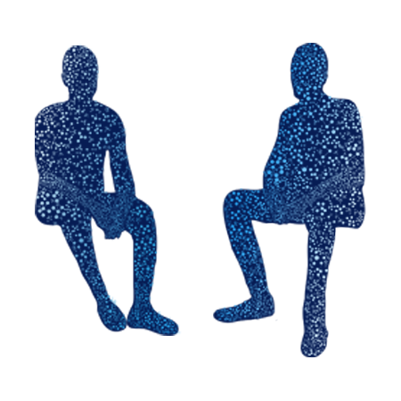

Open Communications

About Open Communications
The second step is to start communicating with necessary parties that will best support your healthy coping and functioning after a traumatic incident.
About Open Communications
The second step is to start communicating with necessary parties that will best support your healthy coping and functioning after a traumatic incident.